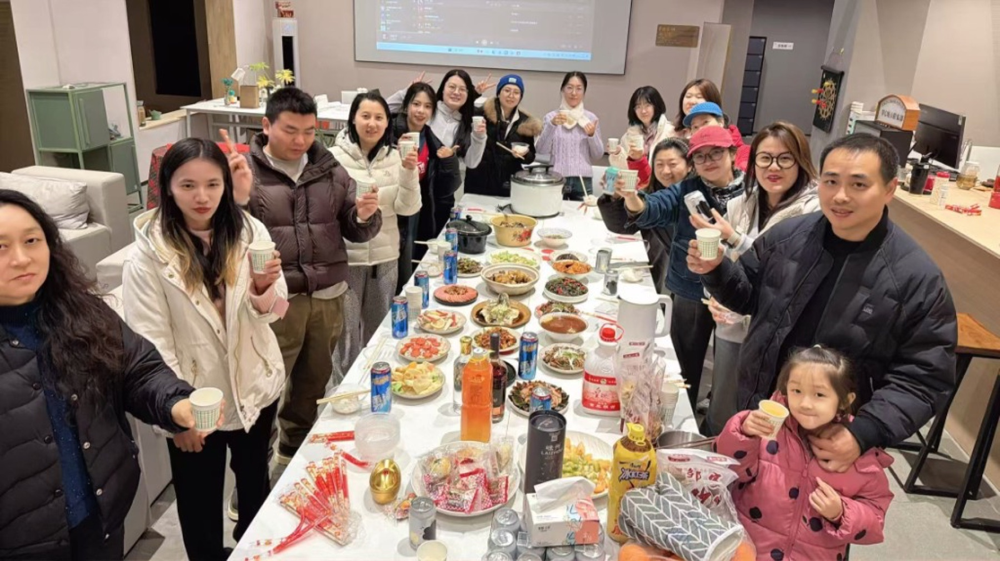
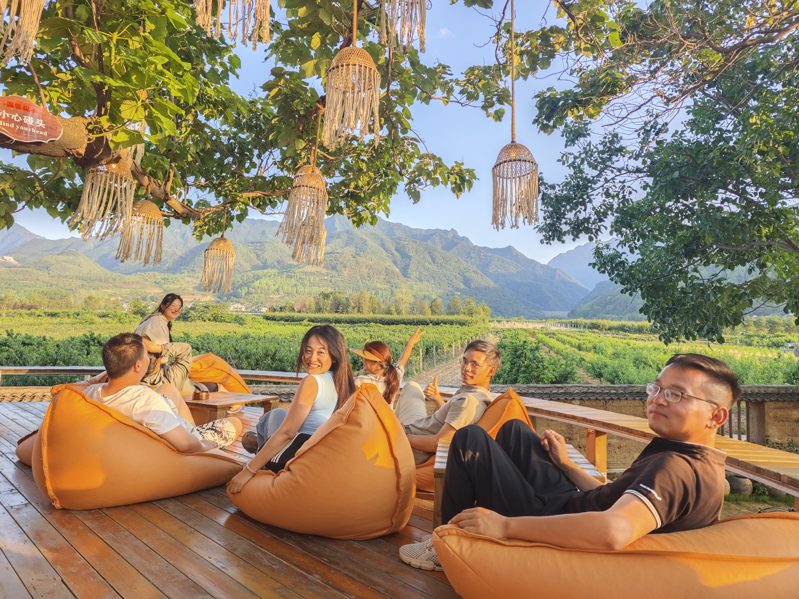
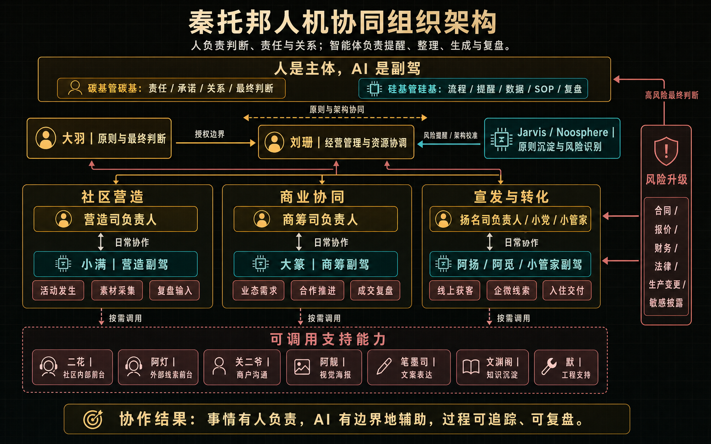
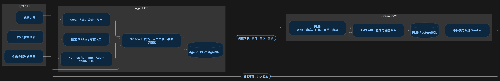
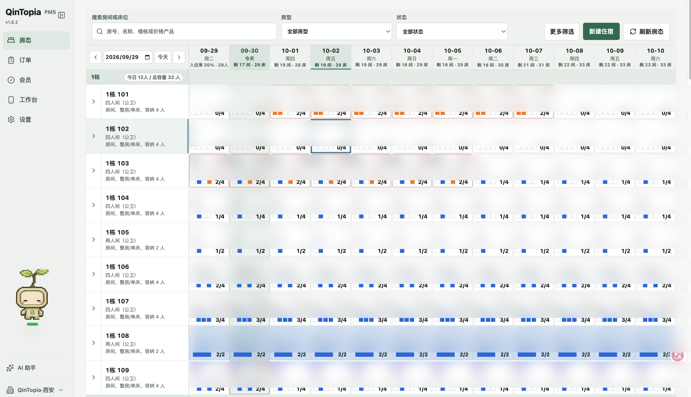
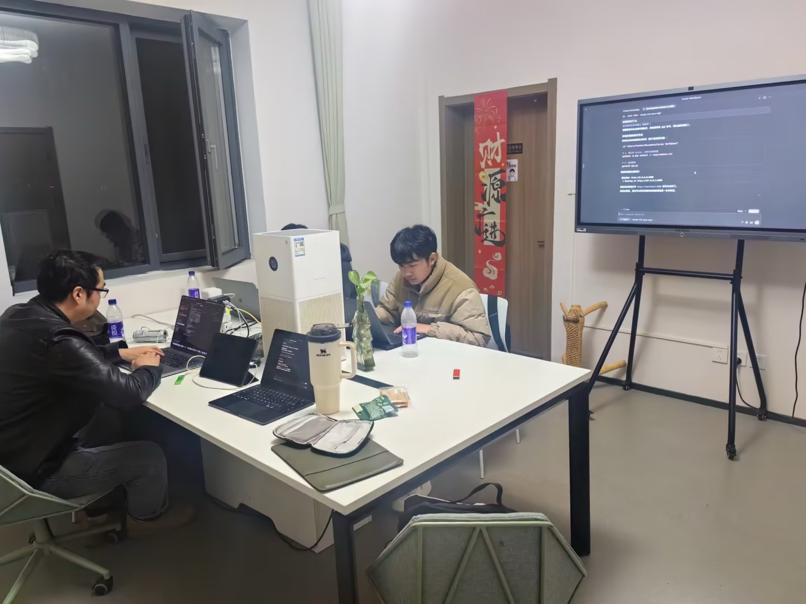
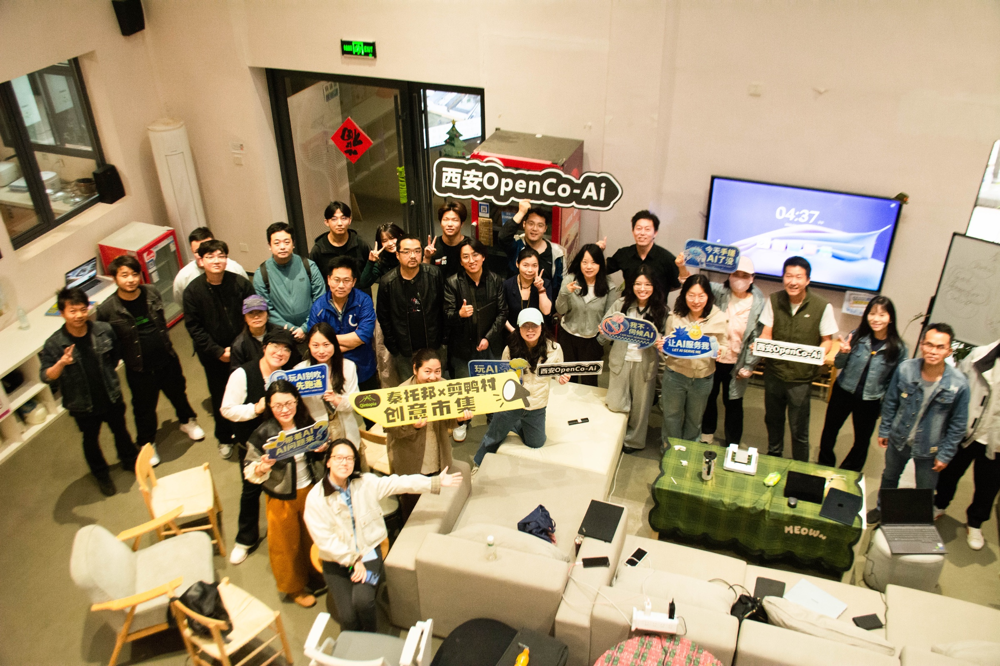

THE QINTOPIA LOOP
生活不是项目的前置条件。
生活本身就是协作基础。
当人住在同一个现场，能力才会被看见，伙伴才会真正相遇，项目才有机会从一次对接变成一起做事。

让人拥有持续生活、相处和试错的现场，业务才有机会长出来。
人负责判断与关系维护，系统承接信息、流程、提醒和记录。
不做悬空的 AI 演示，围绕高校、企业和文旅现场形成真实方案。
文旅和乡村项目的难题，常常不是“有没有一个 AI 工具”。更难的是人才如何进入现场，关系如何持续，信息如何沉淀，项目如何从一次活动变成可交付的长期协作。
把一个人的能力，放进一套可以持续运转的 生活与工作系统。
秦托邦从秦岭脚下剪鸭村的青年社区实践出发。公共空间、共同生活、在地项目和日常关系，让新来的人先理解这里，再找到适合自己的事情。
AI 探索是在这片土壤上继续向前：识别 OPC 人才，连接工具与算力，围绕真实需求组队，让个体和小团队能够在乡村参与更广阔的产业分工。
四层能力彼此咬合，组成一个可以长期运行的 AI OPC 社区，而不是一组分散的服务菜单。

当人住在同一个现场，能力才会被看见，伙伴才会真正相遇，项目才有机会从一次对接变成一起做事。
住宿、办公、阅读、活动和日常相处，提供可以留下来的社区底盘。
持续识别开发者、设计者、运营者，建立能力画像、技能标签与协作记录。
依托新加坡算力中转平台与西安算力中转平台，连接模型、算力、AgentOS 与 PMS，提供接入、路由、调度和应用集成。
围绕具体需求组建能力组，承接外部项目，也孵化社区内部的新产品。
真正的 AI 应用不是多一个聊天窗口，而是把人员、入口、权限、会话、业务记录与项目流程接在一起。

人保留判断、关系与责任，智能体负责信息汇总、提醒、流转和可追踪的执行。
连接人员、入口、权限、智能体会话和业务系统，让协作不再从每次对话重新开始。
把房态、订单、会员、收款和日常服务纳入同一个运营节奏，支撑社区现场稳定运行。


对政府和文旅伙伴，我们更关心现场真正需要什么，再决定用什么技术与组织方式承接。

从景区运营、文旅内容、游客服务、活动组织到地方品牌，先选一个真实问题，再和现场的人一起把方案做出来。
通过空间、伙伴、工具和项目，把“招人”转成一套可以持续发生的社区机制。

你可以带来一个流程、一处空间、一类人才或一个明确的业务目标。秦托邦据此判断参与者、数据、系统和交付边界，再组织合适的技术与 OPC 团队。
适合景区、文旅内容、游客服务、地方品牌和乡村运营。先拿一个真实流程或服务断点，做出可以试运行的智能体与运营方案。
第一步：带来一个现场问题依托新加坡算力中转平台与西安算力中转平台，为高校、企业和项目团队提供模型与算力接入、路由、调度及应用集成。
第一步：确认模型、数据和权限边界适合政府、园区和文旅项目。围绕人才画像、驻留空间、能力库和真实项目，建立可以持续发生的招募与组队机制。
第一步：确定人才画像和在地场景适合已有明确目标的企业、集团、高校和地方团队。秦托邦负责需求拆解、能力组队、智能体开发、系统接入和持续运营。
第一步：提供业务目标与负责人这里展示秦托邦已经形成的自有实践和行业方向。具体客户关系、项目名称和交付范围，以双方确认的信息为准。
秦托邦以人机协同组织、AgentOS 和社群运营 PMS 支撑入住申请、房态、订单、会员、收款、运营日报和日常服务，让经验可以沉淀，团队可以交接。
在匿名化实践中，智能体参与入住申请、经营日报、商业自媒体排期、状态通知和需求收集。
围绕模型与算力接入、知识资源、教学智能体、体育社交、会员服务和文旅运营，形成可继续推进的行业应用方向。
案例区当前采用“自有实践 + 行业方向”表达，不把尚未完成公开授权的客户名称写成项目成果。
秦托邦连接平台能力，也保留现场判断。伙伴区先展示生态连接和技术兼容关系，具体合作等级以正式确认信息为准。
名单依据现有材料与当前合作方向整理。页面使用“生态连接”口径，不直接延伸为战略合作、签约或联合发布。
这些名称先作为待确认公开名单展示，不附未经核实的项目成果，不自动使用机构 Logo。
如果你正在做青年人才社区、乡村运营、文旅场景或 AI 应用转型，欢迎带着一个具体问题来聊。我们从现场出发，先把合作边界说清楚，再决定下一步。
先看秦托邦实践